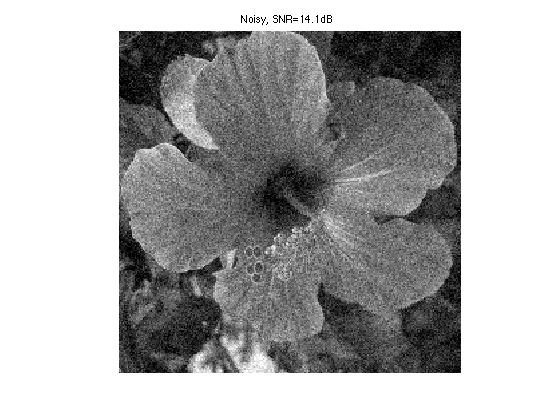
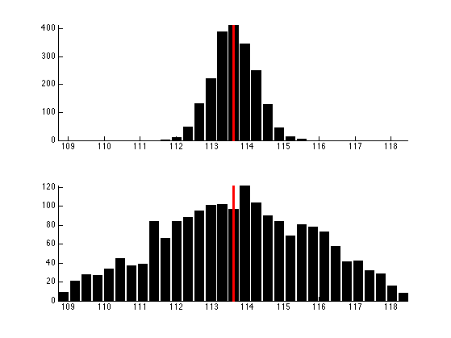
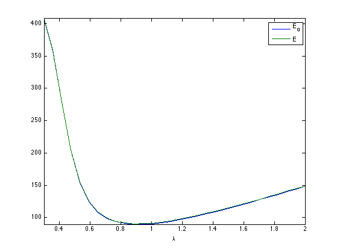
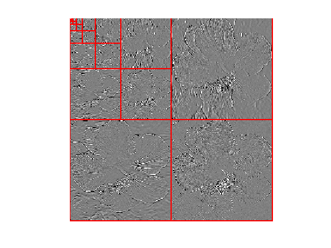
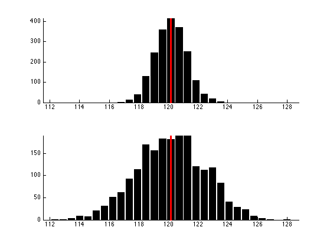
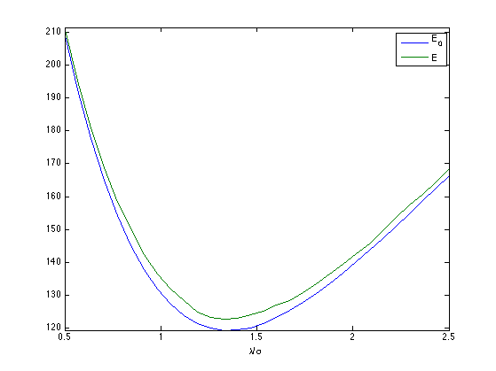

Stein Unbiased Risk Estimator
This tour uses the Stein Unbiased Risk Estimator (SURE) to optimize the value of parameters in denoising algorithms.
Contents
Installing toolboxes and setting up the path.
You need to download the following files: signal toolbox and general toolbox.
You need to unzip these toolboxes in your working directory, so that you have toolbox_signal and toolbox_general in your directory.
For Scilab user: you must replace the Matlab comment '%' by its Scilab counterpart '//'.
Recommandation: You should create a text file named for instance numericaltour.sce (in Scilab) or numericaltour.m (in Matlab) to write all the Scilab/Matlab command you want to execute. Then, simply run exec('numericaltour.sce'); (in Scilab) or numericaltour; (in Matlab) to run the commands.
Execute this line only if you are using Matlab.
getd = @(p)path(p,path); % scilab users must *not* execute this
Then you can add the toolboxes to the path.
getd('toolbox_signal/'); getd('toolbox_general/');
Denoising and SURE
We consider a simple generative model of noisy images \(F = f_0+W\) where \(f_0 \in \RR^N\) is a deterministic image of \(N\) pixels, and \(W\) is a Gaussian white noise distributed according to \(\Nn(0,\si^2 \text{Id}_N)\), where \(\si^2\) is the variance of noise.
The goal of denoising is to define an estimator \(h(F)\) of \(f_0\) that depends only on \(F\), where \(h : \RR^N \rightarrow \RR^N\) is a potentially non-linear mapping.
Note that while \(f_0\) is a deterministic image, both \(F\) and \(h(F)\) are random variables (hence the capital letters).
The goal of denoising is to reduce as much as possible the denoising error given some prior knowledge on the (unknown) image \(f_0\). A mathematical way to measure this error is to bound the quadratic risk \(\EE_W(\norm{h(F) - f_0}^2)\), where the expectation is computed with respect to the distribution of the noise \(W\)
For real life applications, one does not have access to the underlying image \(f_0\). In this tour, we however assume that \(f_0\) is known, and \(f = f_0 + w\in \RR^N\) is generated using a single realization of the noise \(w\) that is drawn from \(W\). We define the estimated deterministic image as \(h(f)\) which is a realization of the random vector \(h(F)\).
Number \(N = n \times n\) of pixels.
n = 128*2; N = n^2;
First we load an image \(f \in \RR^N\) where \(N=n \times n\) is the number of pixels.
name = 'hibiscus';
f0 = rescale( sum(load_image(name,n),3) );
Display it.
clf; imageplot(f0);
Standard deviation \(\si\) of the noise.
sigma = .08;
Then we add Gaussian noise \(w\) to obtain \(f=f_0+w\).
f = f0 + sigma*randn(n);
Display the noisy image. Note the use of the clamp function to saturate the result to \([0,1]\) to avoid a loss of contrast of the display.
clf; imageplot(clamp(f), strcat(['Noisy, SNR=' num2str(snr(f0,f),3) 'dB']));
The Stein Unbiased Risk Estimator (SURE) associated to the mapping \(h\) is defined as \[ \text{SURE}(f) = -N\si^2 + \norm{h(f)-f}^2 + 2\si^2 \text{df}(f) \] where df stands for degree of freedom, and is defined as \[ \text{df}(f) = \text{div} h(f) = \sum_i \pd{h}{f_i}(f). \]
It has been introduced in:
Stein, Charles M. (November 1981). "Estimation of the Mean of a Multivariate Normal Distribution". The Annals of Statistics 9 (6): 1135-1151.
And it has been applied to wavelet-based non-linear denoising in:
Donoho, David L.; Iain M. Johnstone (December 1995). "Adapting to Unknown Smoothness via Wavelet Shrinkage". Journal of the American Statistical Association (Journal of the American Statistical Association, Vol. 90, No. 432) 90 (432): 1200-1244.
If the mapping \(f \mapsto h(f)\) is differentiable outside a set of zero measure (or more generally weakly differentiable), then SURE defines an unbiased estimate of the quadratic risk \[ \EE_W(\text{SURE}(F)) = \EE_W( \norm{f_0-h(F)}^2 ). \] This is especially useful, since the evaluation of SURE does not necessitate the knowledge of the clean signal \(f_0\) (but note however that it requires the knowledge of the noise level \(\si\)).
In practice, one replaces \(\text{SURE}(F)\) from its empirical evaluation \(\text{SURE}(f)\) on a single realization \(f\). One can then minimize \(\text{SURE}(f)\) with respect to a parameter \(\la\) that parameterizes the denoiser \(h=h_\la\).
Linear Denoising SURE
We consider a translation-invariant linear denoising operator, which is thus a convolution \[ h(f) = g \star h \] where \(g \in \RR^N\) is a low pass kernel, and \(\star\) denotes the periodic 2-D convolution.
Since we use periodic boundary condition, we compute the convolution as a multiplication over the Fourier domain. \[ \forall \om, \quad \hat h(f)(\om) = \hat f(\om) \hat g(\om) \] where \(\hat g(\om)\) is the frequency \(\om\) of the discrete 2-D Fourier transform of \(g\) (computed using the function fft2).
convol = @(f,g)real(ifft2(fft2(f) .* repmat(fft2(g), [1 1 size(f,3)]) ));
We define a parameteric kernel \(g_\la\) parameterized by its bandwidth \(\la>0\). We use here a Gaussian kernel \[ g_\la(a) = \frac{1}{Z_\la} e^{ -\frac{\norm{a}}{2 \la^2} } \] where \(Z_\la\) ensures that \(\sum_a g_\la(a) = 1\).
normalize = @(f)f/sum(f(:)); x = [0:n/2 -n/2+1:-1]; [Y,X] = meshgrid(x,x); g = @(lambda)normalize( exp( -(X.^2+Y.^2)/(2*lambda^2) ) );
Define our denoising operator \(h=h_\la\) (we make explicit the dependency on \(\la\)): \[ h_\la(f) = g_\la \star f. \]
h = @(f,lambda)convol(f, g(lambda));
Example of denoising result.
lambda = 1.5; clf; imageplot(clamp(h(f,lambda)));
For linear operator, the dregree of freedom is equal to the trace of the operator, and thus in our case it is equal to the sum of the Fourier transform \[ \text{df}_\la(f) = \text{tr}(h_\la) = \sum_{\om} \hat g_\la(\om) \] Note that we have made explicit the dependency of df with respect \(\la\). Note also that df$(f)$ actually does not depends on \(f\).
df = @(lambda)real(sum(sum(fft2(g(lambda)))));
We can now define the SURE=SURE\(_\la\) operator, as a function of \(f, h(f), \lambda\).
SURE = @(f,hf,lambda)-N*sigma^2 + norm(hf-f, 'fro')^2 + 2 * sigma^2 * df(lambda);
Exercice 1: (check the solution) For a given \(\lambda\), display the histogram of the repartition of the quadratic error \(\norm{y-h(y)}^2\) and of \(\text{SURE}(y)\). Compute these repartition using Monte-Carlo simulation (you need to generate lots of different realization of the noise \(W\). Display in particular the location of the mean of these quantities.
exo1;
In practice, the SURE is used to set up the value of \(\la\) from a single realization \(f=f_0+w\), by minimizing \(\text{SURE}_\la(f)\).
Exercice 2: (check the solution) Compute, for a single realization \(f=f_0+w\), the evolution of \[ E(\la) = \text{SURE}_\la(f) \qandq E_0(\lambda) = \norm{f-h_\la(f)}^2 \] as a function of \(\lambda\).
exo2;
Exercice 3: (check the solution) Display the best denoising result \(h_{\la^*}(f)\) where \[\la^* = \uargmin{\la} \text{SURE}_\la(f) \]
exo3;
Soft Thresholding SURE
In order to enhance the denoising results for piecewise regular signal and image, it is possible to use non-linear thresholding in an orthogonal wavelet basis \( \Bb = \{ \psi_m \}_{m} \) where \(\psi_m \in \RR^N\) is a wavelet element.
Re-generate a noisy image.
f = f0 + sigma*randn(n);
The soft-thresholding estimator thus reads \[ h_\la(f) = \sum_m s_\la( \dotp{f}{\psi_m} ) \psi_m \qwhereq s_\la(\al) = \max\pa{0, 1-\frac{\la}{\abs{\al}}} \al. \] It can be conveniently written as \[ h_\la = \Ww^* \circ S_\la \circ \Ww \] where \(\Ww\) and \(\Ww^*\) are forward and inverse wavelet transform \[ \Ww(f) = ( \dotp{f}{\psi_m} )_m \qandq \Ww^*(x) = \sum_m x_m \psi_m, \] and \( S_\la \) is the diagonal soft thresholding operator \[ S_\la(x) = ( s_\la(x_m) )_m. \]
Define the wavelet transform and its inverse.
W = @(f)perform_wavortho_transf(f,0,+1); Ws = @(x)perform_wavortho_transf(x,0,-1);
Display the wavelet transform \(\Ww(f_0)\) of the original image.
clf; plot_wavelet(W(f0),1);
Define the soft thresholding operator.
S = @(x,lambda)max(0, 1-lambda ./ max(1e-9,abs(x)) ) .* x;
Define the denoising operator.
h = @(f,lambda)Ws(S(W(f),lambda));
Example of denoising result.
lambda = 3*sigma/2; clf; imageplot(clamp(h(f,lambda)));
Since \(Ww\) is an orthogonal transform, one has \[ \text{df}(f) = \text{div}( S_\la )( \Ww(f) ) = \sum_m s_\la'( \dotp{f}{\psi_m} ) = \norm{\Ww(h(f))}_0 \] where \( s_\la' \) is the derivative of the 1-D function \(s_\la\), and \(\norm{\cdot}_0\) is the \(\ell^0\) pseudo-norm \[ \norm{x}_0 = \abs{ \enscond{m}{x_m \neq 0} }. \]
To summerize, the degree of freedom is equal to the number of non-zero coefficients in the wavelet coefficients of \(h(f)\).
df = @(hf,lambda)sum(sum( abs(W(hf))>1e-8 ));
We can now define the SURE operator, as a function of \(f, h(f), \lambda\).
SURE = @(f,hf,lambda)-N*sigma^2 + norm(hf-f, 'fro')^2 + 2 * sigma^2 * df(hf,lambda);
Exercice 4: (check the solution) For a given \(\lambda\), display the histogram of the repartition of the quadratic error \(\norm{y-h(y)}^2\) and of \(\text{SURE}(y)\). Compute these repartition using Monte-Carlo simulation (you need to generate lots of different realization of the noise \(W\). Display in particular the location of the mean of these quantities. Hint: you can do the computation directly over the wavelet domain, i.e. consider that the noise is added to the wavelet transform.
exo4;
Exercice 5: (check the solution) Compute, for a single realization \(f=f_0+w\), the evolution of \[ E(\la) = \text{SURE}_\la(f) \qandq E_0(\lambda) = \norm{f-h_\la(f)}^2 \] as a function of \(\lambda\).
exo5;
Exercice 6: (check the solution) Display the best denoising result \(h_{\la^*}(f)\) where \[\la^* = \uargmin{\la} \text{SURE}_\la(f) \]
exo6;
Block-soft Thresholding SURE
To improve the result of soft thresholding, it is possible to threshold blocks of coefficients.
We define a partition \( \{1,\ldots,N\} = \cup_k b_k \) of the set of wavelet coefficient indexes. The block thresholding is defined as \[ h_\la(f) = \sum_k \sum_{m \in b_k} a_\la( e_k ) \dotp{f}{\psi_m} \psi_m \qwhereq e_k = \sum_{m \in b_k} \abs{\dotp{f}{\psi_m}}^2, \] where we use the James-Stein attenuation threshold \[ a_\la(e) = \max\pa{ 0, 1 - \frac{\la^2}{e^2} }. \]
The block size \(q\).
q = 4;
A function to extract blocks.
[dX,dY,X,Y] = ndgrid(0:q-1,0:q-1,1:q:n-q+1,1:q:n-q+1); I = X+dX + (Y+dY-1)*n; blocks = @(fw)reshape(fw(I(:)),size(I));
A function to reconstruct an image from blocks.
linearize = @(x)x(:); unblock = @(H)reshape( accumarray( I(:), linearize(H), [n*n 1], @min), [n n]);
Compute the average energy of each block, and duplicate.
energy = @(H)mean(mean(abs(H).^2,1),2); energy = @(H)repmat( max3(energy(H),1e-15), [q q]);
Threshold the blocks. We use here a Stein block thresholding. All values within a block are atenuated by the same factor.
S = @(H,lambda)max(1-lambda^2 ./ energy(H),0) .* H;
Block thresholding estimator \(h_\lambda(f)\).
h = @(f,lambda)Ws(unblock(S(blocks(W(f)),lambda) ) );
Example of block denoising.
lambda = 1.1*sigma; clf; imageplot(clamp(h(f,lambda)));
Since the block-thresholding operates in a block diagonal manner over the wavelet coefficients, it degree of freedom is a sum of the divergence of each block James-Stein operator \[ \text{df}(f) = \sum_{ e_k > \la^2 } \text{tr}( \partial \phi (a_k) ) \] where \( a_k = (\dotp{f}{\psi_m})_{m \in b_k} \) is the set of coefficients inside a block, that satisfies \(\norm{a_k}=e_k\), and where \[ \phi(a) = \pa{ 1 - \frac{\la^2}{\norm{a}^2} } a. \] One can compute explicitely the derivative of \(\phi\) \[ \partial \phi(a) = \pa{ 1 - \frac{\la^2}{\norm{a}^2} } \text{Id} + 2 \frac{\la^2}{\norm{a}^2} \Pi_a \] where \(\Pi_a\) is the orthogonal projector on \(a\).
This gives the folowing formula for the degree of freedom \[ \text{df}(f) = \norm{\Ww(h_\la(f))}_0 + \sum_{ e_k > \la^2 } \frac{\la^2}{e_k} (2-\abs{b_k}). \] One can note that the degree of freedom differs from the one of the soft thresholding (it is not in general an integer).